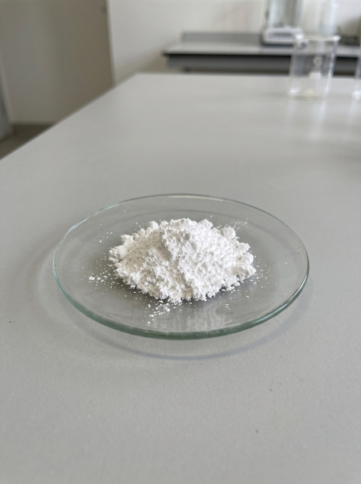
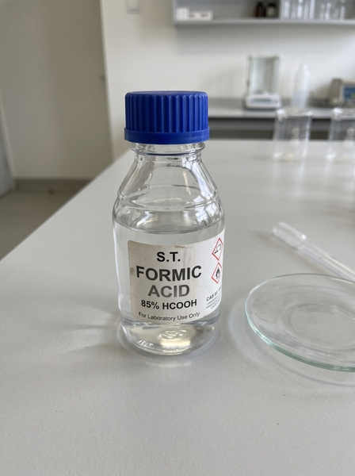

AgNO₃
AgNO₃Silver Nitrate
High-purity silver nitrate crystals for plating, photography and lab use.
View Silver NitrateSulman Traders
C₃H₈O₃
Clear, odourless, viscous liquid. Glycerin (glycerol) is widely used in pharmaceuticals, cosmetics, food processing and chemical synthesis. We supply pharmaceutical and industrial grades in small packs and bulk quantities.
Mention the grade (pharma or industrial) and quantity in your message.
Used as a humectant and solvent in creams, lotions, soaps and pharmaceutical syrups. Its moisture-retaining properties make it ideal for skin-care formulations.
Approved food additive (E422) used as a sweetener, preservative and solvent in food processing, confectionery and baked goods.
Starting material for the production of nitroglycerine, epichlorohydrin and other chemical compounds. Also used as a plasticiser and lubricant.
Used in e-liquid/vaping products, antifreeze formulations, printing inks and as a lubricant for moulds and machinery.
Send us any other questions on WhatsApp or through the contact form.
We supply pharmaceutical grade (99%+ purity, USP standard) and industrial grade glycerin. Tell us your application and we will confirm the right grade.
We supply in small bottles, jerrycans and bulk drums. Tell us the quantity you need and we will quote accordingly.
Glycerin is non-toxic and biodegradable. It is a GRAS (Generally Recognised As Safe) substance. Standard precautions apply — avoid contact with eyes and wash hands after handling.
Yes, pharmaceutical grade glycerin meets USP/BP standards and is suitable for food and pharma applications. Please confirm the grade when ordering.
AgNO₃High-purity silver nitrate crystals for plating, photography and lab use.
View Silver Nitrate
ZnOZinc oxide for rubber, ceramics, pharmaceuticals and cosmetics.
View Zinc Oxide
HCOOHIndustrial formic acid for leather, textiles and rubber processing.
View Formic Acid